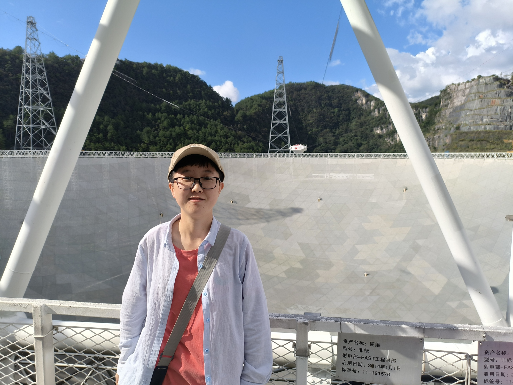

About

Hello there, I'm a postdoc at NAOC, in the Computational Cosmology Group (we call it CCG). In the fall of 2021, I became a PhD student of my advisor Wang, Jie, an excellent expert in galaxy formation, N-body simulations, large-scale structure of the universe, and deep learning in astronomy.
I'm more interested in radio astronomy, especially after the establishment of the Five-hundred-meter Aperture Spherical radio Telescope, FAST. In 2019, when I was a junior at Jilin University, Prof. Wang needed some undergraduates to learn how to process the HI data of FAST. So I joined his group and now I am a member of the FAST key project mapping M31, our neighbor galaxy, and conducting another deep HI survey named Hundred-deg² HI Deep (HD²) Survey combined with DESI. In Oct. 2026, I obtained my PhD in NAOC and UCAS, and started as a postdoc in Nov. 2026.
Research Interests
- HI in galaxies (low redshift, e.g. z less than 0.1 ) — we want to find them, just like ALFALFA and other surveys, but much deeper.
- Galaxy formation and evolution — a huge topic, right? - HI is a key tracer of the star formation process in galaxies.
- Multiband observational astronomy — including radio astronomy, also optical surveys (optical observations have more fun!).
Welcome to visit our survey websites to learn more: HI Survey conducted by CCG@NAOC.
Education & Work Experience
- 2026.11 – presentPostdoc in NAOC
- 2021.09 – 2026-10PhD candidate in NAOC and UCAS, major in Astrophysics
- 2017.09 – 2021.06Jilin University, Bachelor in Physics